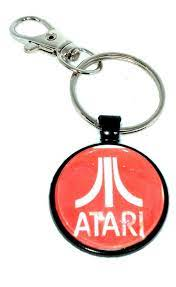

"T" Shirts
Special Buy! Limited Supply! From the First World of Atari Trade Show in Las Vegas, Atari Collector "T" Shirts! These high Quality Fruit of the Loom brand short sleeve "T" Shirts, 50%Cotton, 50% Polyester Bend, are Navy Blue in color. (image: Vegas_Tee.jpg) CB103094-XL $25.00
Key Punch
From Atari Purchasing/Engineering Departments. 7 3/8" x 3 1/4" card with Key Punch squares and a 1 3/4" x 1 1/4# Negative imbedded into the Micro Fiche Card w/ Engineering Part Number, Description, Drawing Size, Atari Logo and Name (image: Atari_Micro_Fiche.jpg) CB103072 $17.00


Bumper stickers
Atari Bumper stickers (Circa 1987 Atari). They Say "I (Red Heart) Atari" These I Love Atari Bumper Stickers are 11 3/4 by 3 1/2 in size, with a black background, white block letters and Red Heart. (Image: Atari_Bumper_Sticker.jpg) CB103075 $10
Coffee Ceramic Mug
Coffee Ceramic Mug with White 11oz Colour Inside Atari retro Gamer print
This beautiful ceramic mug is perfect for any event of the day. Your morning coffee, a hot chocolate, or any other hot beverage you enjoy. The mug is glossy white with a coloured rim, inside, and handle.$19.99
Atari on board
Atari PLAYER ON BOARD Car Window sign. Yellow 5" x 5" square plastic sign with a 3/4 inch wide clear top mounting suction cup. Clear suction cup can be removed for wall mounting purposes. Straight from of the Sunnyvale Atari warehouses when we cleared them out. Small print. $49.99